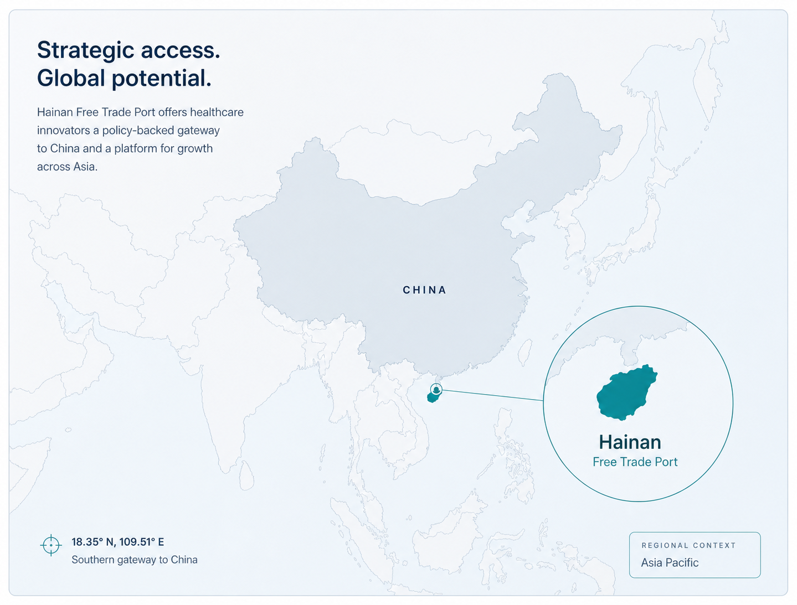

Drug Companies
Innovative therapies with overseas approval, clinical evidence, or a defined China-entry question.

CHINA HEALTHCARE MARKET ENTRY PATHWAYS
AsterNexis Advisory helps overseas drug, medical device, diagnostic, and digital health companies evaluate whether Hainan, Boao Lecheng, the Greater Bay Area, Beijing, or other China pilot pathways may support early clinical use, policy positioning, partner matching, or market-entry planning.
WHO THIS HELPS
AsterNexis Advisory is designed for overseas healthcare innovators deciding whether China’s special access pathways are relevant before committing major resources to full market entry.
Innovative therapies with overseas approval, clinical evidence, or a defined China-entry question.
Device teams assessing controlled clinical use, import scenarios, hospital demand, or partner readiness.
Diagnostic products evaluating evidence needs, hospital fit, and China-based commercialization paths.
Software, digital therapeutic, and AI-enabled health companies exploring pilot-region opportunities.
ENTRY CONTEXT
Full registration, reimbursement, hospital adoption, partner selection, and commercial launch often require different strategies. Special policy mechanisms may allow selected products to explore earlier evaluation, controlled clinical use, real-world evidence, or regional market access.
ASSESSMENT QUESTIONS
AsterNexis Advisory helps overseas healthcare teams identify the right route, evidence requirements, partners, and next steps for entering China.
Whether Hainan, GBA, Beijing, or another pilot route may be relevant.
Clinical use, real-world data, local partner, park landing, or commercial strategy.
Eligibility, institutional application, product status, evidence, import rules, and compliance.
Hospitals, parks, distributors, investors, or government-facing platforms.
Product profile, approval status, clinical evidence, regulatory history, and China objectives.
ASSESSMENT PROCESS
POLICY GUIDANCE
PATHWAY COMPARISON
Hainan pathway
A special medical zone focused on controlled clinical use of clinically urgent imported drugs and medical devices, international medical services, and real-world data pathways.
GBA pathway
A cross-border clinical-use mechanism for the nine mainland GBA cities, linking Hong Kong and Macao approved or used products with designated mainland medical institutions.
| Comparison point | Boao Lecheng | Greater Bay Area |
|---|---|---|
| Core policy logic | Hainan special-zone access for overseas-approved, mainland China-unapproved clinically urgent products. | Cross-border GBA access for Hong Kong/Macao drugs and devices used through designated mainland GBA hospitals. |
| Best company fit | Innovators seeking China-entry evidence, Lecheng clinical use, RWD potential, and Hainan FTP policy positioning. | Innovators with Hong Kong/Macao registration or hospital-use footprint who want GBA clinical adoption. |
| Where use happens | Qualified medical institutions in Boao Lecheng, Hainan. | Designated medical institutions across the nine mainland cities of the Guangdong-Hong Kong-Macao Greater Bay Area. |
| Evidence and registration value | Lecheng RWD may be positioned for later China registration discussions when data quality and regulatory requirements are met. | GBA use can support clinical familiarity and cross-border adoption; registration value depends on product pathway and regulator engagement. |
| Commercial boundary | Controlled special access; not the same as full mainland China marketing approval. | Controlled designated-institution use; not the same as nationwide mainland China distribution approval. |
START HERE
ABOUT HAINAN


ABOUT ASTERNEXIS ADVISORY
WHY ASTERNEXIS ADVISORY
AsterNexis Advisory is positioned as a cautious, source-based advisory platform for overseas healthcare teams evaluating China special-access options.
We organize policy information into practical market-entry questions for overseas teams.
We monitor Hainan Free Trade Port and Boao Lecheng pathway relevance for healthcare products.
We help identify relevant clinical, industrial, park, commercial, and investment resources.
We translate policy and pathway complexity for overseas executive, regulatory, and commercial teams.
We do not present special access as a shortcut, guarantee, or replacement for official review.
Submission received
AsterNexis Advisory will review your needs carefully and follow up with relevant next steps.